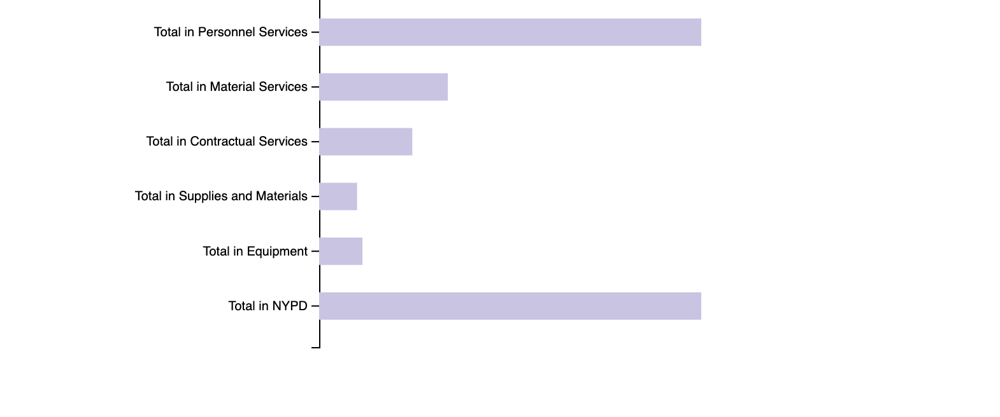
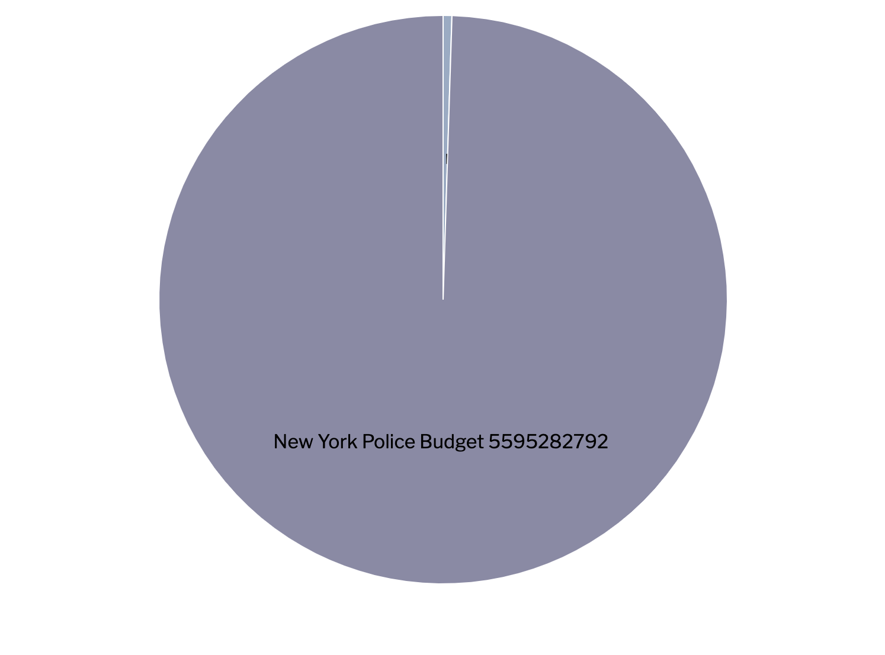

Analysis
Seen in the barchart is the budget break down for New York city. With New York city’s nearly $99.7 billion taking up more than 5% of the city's total budget. Although that 5 % may seem a bit a small in correspondence to the social program budgeted by the city NYPD receive more than 90 % of programs allocated to mental health resources, affordable housing infrastructures,anti-poverty programs, houseless initiatives and Supplemental Nutrition Assistance Program (SNAP) program recipients and domestic violence support. This proves Angela Davis point mentioned in the literature review where argued that police “devour public funds” (Davis 2003).
  -->